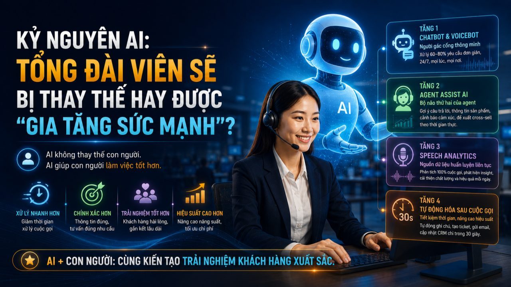
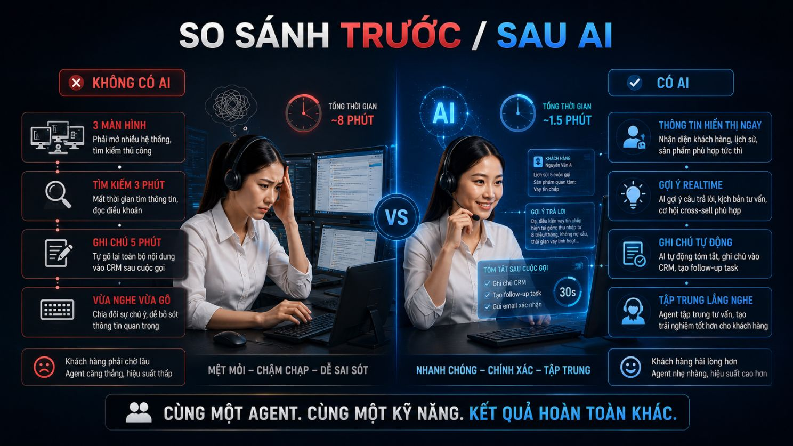

Trang chủ › Blog › Contact Center Insights · Mùa 1
Dữ liệu, AI và tương lai
AI sẽ thay đổi Contact Center như thế nào?

Mỗi khi nhắc đến AI trong Contact Center, có 2 luồng phản ứng thường thấy:
Agent lo lắng: "AI có thay thế mình không?"
Nhà quản lý kỳ vọng: "AI có giúp cắt giảm nhân sự không?"
Sau hơn 7 năm trong ngành cả hai câu hỏi đó đều đang nhắm sai mục tiêu. Câu hỏi đúng hơn là:
"AI có thể giúp agent làm việc tốt hơn bao nhiêu so với khi không có AI?"
Và câu trả lời cho câu hỏi đó mới thực sự thú vị.
Hãy nhìn vào một ngày làm việc thực tế trước và sau khi có AI:
Trước khi có AI:
Khách hàng gọi vào hỏi về điều kiện vay tín chấp.
Agent vừa nghe vừa gõ tìm kiếm trên hệ thống nội bộ.
Mở 3 màn hình. Tìm đúng sản phẩm. Đọc điều khoản hợp đồng.
Trả lời khách hàng nhưng đã mất 2–3 phút chỉ để tìm thông tin.
Sau cuộc gọi: tự gõ lại toàn bộ nội dung vào CRM. Thêm 5 phút cho việc ghi chú.
Sau khi có AI:
Khách hàng gọi vào AI nhận diện ngay đây là ai, từng gọi về vấn đề gì.
Thông tin sản phẩm phù hợp hiển thị ngay trên màn hình.
AI gợi ý câu trả lời chuẩn xác theo ngữ cảnh agent chỉ cần điều chỉnh và xác nhận.
Sau cuộc gọi: AI tự động tóm tắt, ghi chú vào CRM, tạo follow-up task trong 30 giây.
Kết quả: agent tập trung hoàn toàn vào lắng nghe và tư vấn thay vì vừa nghe vừa gõ tìm kiếm trên 3 4 5 tab.
AI không chỉ là một hộp chat thông minh trên website. Trong một Contact Center hiện đại ngành BFSI AI hiện diện trong từng mili-giây của cuộc gọi trước, trong và sau khi agent kết nối với khách hàng.

Đây là 4 tầng AI đang thay đổi Contact Center từ tự động hóa đến thông minh hóa:
🤖 Tầng 1 Chatbot & Voicebot: Người gác cổng thông minh
Đây là tầng AI phổ biến nhất và thường bị hiểu sai nhất.
Chatbot và Voicebot không phải để "thay thế agent hoàn toàn." Chúng xử lý 60–80% các yêu cầu đơn giản, lặp lại tra cứu số dư, kiểm tra trạng thái giao dịch, hướng dẫn thủ tục mở tài khoản để agent tập trung vào những cuộc gọi thực sự cần tư duy và cảm xúc con người. Một Voicebot được triển khai tốt không khiến khách hàng bực bội vì "lại phải nói chuyện với máy." Ngược lại nó giải quyết vấn đề trong 30 giây, lúc 2 giờ sáng, không cần chờ máy. Trong ngành BFSI: đây là lớp bảo vệ đầu tiên giảm tải hệ thống giờ cao điểm mà không tăng chi phí nhân sự.
🎧 Tầng 2 Agent Assist AI: Bộ não thứ hai của agent
Đây là tầng AI tạo ra tác động lớn nhất nhưng ít được nói đến nhất. Agent Assist AI hoạt động như "siêu trợ lý ngồi cạnh agent" trong suốt cuộc gọi:
- → Khách hàng đặt câu hỏi → AI gợi ý câu trả lời chính xác ngay lập tức
- → Cuộc gọi đề cập đến sản phẩm X → AI hiển thị thông tin và kịch bản tư vấn liên quan
- → Khách hàng có dấu hiệu bực bội → AI cảnh báo agent và gợi ý cách xử lý tình huống
- → Cơ hội cross-sell xuất hiện → AI đề xuất sản phẩm phù hợp với chân dung khách hàng
Điều thú vị: Agent Assist AI không chỉ giúp agent mới nó còn giúp agent kỳ cựu duy trì chất lượng nhất quán, ngay cả khi đang xử lý cuộc gọi thứ 80 trong ngày. Agent 1 năm kinh nghiệm + AI = xử lý tốt như agent 5 năm kinh nghiệm.
Và đó chính là lý do AHT giảm 20–30% tại các Contact Center triển khai Agent Assist thành công khách hàng không phải chờ, hiệu suất tổng đài tăng vọt.
📊 Tầng 3 Speech Analytics: Nguồn dữ liệu huấn luyện liên tục
Như đã chia sẻ ở bài #18 Speech Analytics cho phép AI phân tích 100% cuộc gọi, không chỉ 2% sample như QA truyền thống.
Nhưng trong bức tranh AI tổng thể, Speech Analytics đóng vai trò quan trọng hơn thế:
Mỗi cuộc gọi được phân tích → hệ thống học pattern nào hiệu quả → Agent Assist gợi ý ngày càng chính xác hơn → Chatbot xử lý ngày càng thông minh hơn.
AI trong Contact Center không được triển khai một lần rồi xong. Nó tự học và tự cải thiện mỗi ngày.
⚙️ Tầng 4 Tự động hóa sau cuộc gọi: Phần ít được để ý nhưng tiết kiệm nhiều nhất
Trung bình sau mỗi cuộc gọi, agent mất 3–5 phút để ghi chú CRM, tạo ticket, gửi email xác nhận, cập nhật hệ thống. Với AI tự động hóa hậu cuộc gọi tất cả hoàn thành trong 30 giây. Nhân lên với 10.000 cuộc gọi mỗi ngày:
10.000 × 4 phút = hơn 660 giờ làm việc được giải phóng mỗi ngày.
Không phải tương lai. Đang xảy ra tại các Contact Center tiên tiến nhất trong ngành BFSI hiện nay.
Vòng tròn AI khép kín và vai trò từng giải pháp của Minh Phúc Transformation:
Nhìn lại toàn bộ series này, bức tranh AI trong Contact Center đang dần hiện rõ:
OmiBot Người gác cổng: Xử lý 60–80% yêu cầu inbound lặp lại. Outbound xử lý 30.000–60.000 leads mỗi ngày lọc ra khách hàng thực sự có nhu cầu để agent tiếp quản.
OmiCX Bộ não thứ hai: Agent Assist AI gợi ý câu trả lời realtime, hiển thị thông tin 360 độ, tự động ghi chú và tạo follow-up sau cuộc gọi. Biến mỗi agent thành tư vấn viên được hỗ trợ bởi dữ liệu.
OmiQC Nguồn dữ liệu liên tục: Speech Analytics phân tích 100% cuộc gọi không chỉ đảm bảo chất lượng mà còn là "nguyên liệu" để toàn bộ hệ thống AI học hỏi và cải thiện mỗi ngày.
Ba tầng này không hoạt động độc lập:
OmiBot lọc và xử lý → OmiCX hỗ trợ agent tư vấn hiệu quả hơn → OmiQC phân tích và phản hồi dữ liệu để cả hệ thống ngày càng thông minh hơn → vòng tròn tiếp tục.
Nhưng có một điều AI chưa thể thay thế và có lẽ không bao giờ hoàn toàn thay thế được:
Khoảnh khắc khách hàng đang hoảng loạn vì 15 triệu bốc hơi khỏi tài khoản và họ cần nghe một giọng nói con người nói:
"Anh/chị yên tâm, em xử lý ngay cho mình."
AI làm cho agent giỏi hơn. Nhưng chính agent mới là người tạo ra niềm tin.
Tương lai của Contact Center không phải là "AI thay thế người."
Mà là: "AI + người" mỗi bên làm đúng vai trò của mình.
Và những doanh nghiệp BFSI biết cách tận dụng AI để gia tăng sức mạnh cho đội ngũ sẽ là những người làm chủ cuộc chơi trải nghiệm khách hàng.
Rất mong nghe góc nhìn thực tế từ anh/chị đang vận hành Contact Center 👇
Hiện tại tổ chức của anh/chị đang ứng dụng AI ở tầng nào?
- 🤖 Tầng 1 Chatbot / Voicebot xử lý yêu cầu tự động
- 🎧 Tầng 2 Agent Assist hỗ trợ realtime trong cuộc gọi
- 📊 Tầng 3 Speech Analytics phân tích 100% cuộc gọi
- ⚙️ Tầng 4 Tự động hóa sau cuộc gọi
- 🚀 Cả 4 tầng đang triển khai đồng bộ
Rất mong được trao đổi cùng anh/chị 👇